ECE 143
An Analysis of Goodreads Dataset
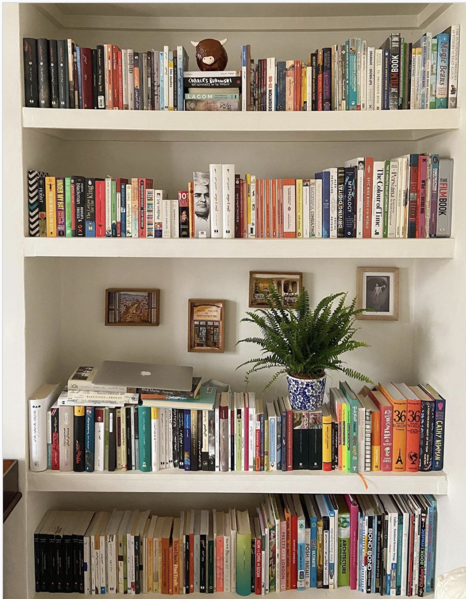
Datasets and Preprocessing
Authors
Genres
Ratings
Title-based Genre Prediction
Resources
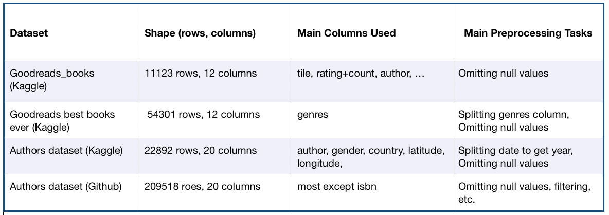
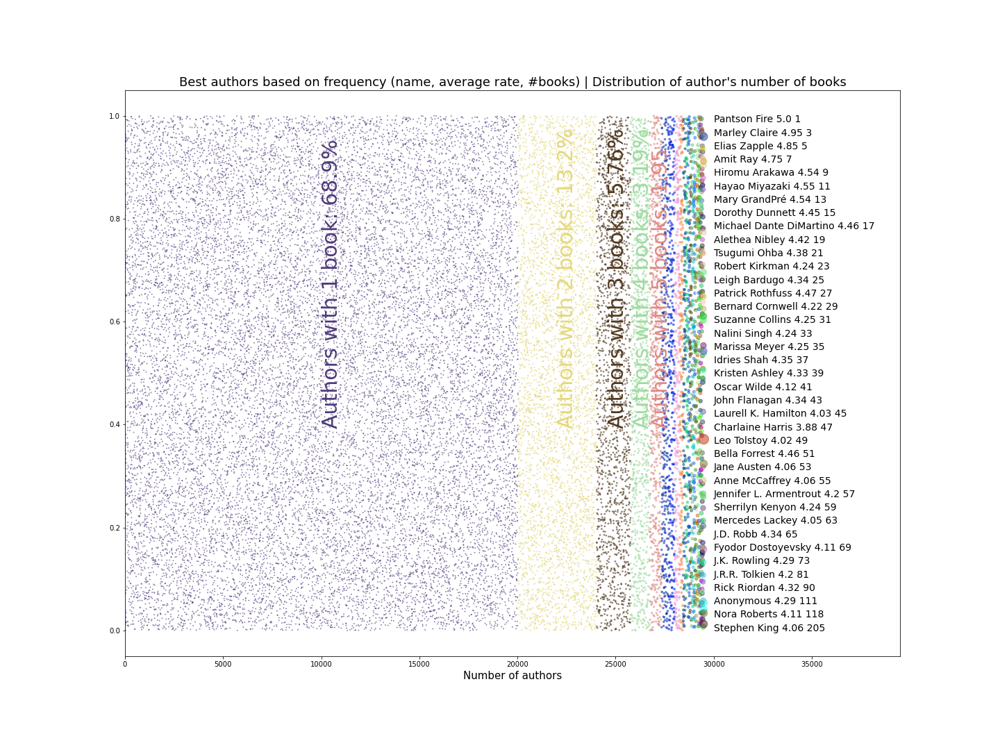 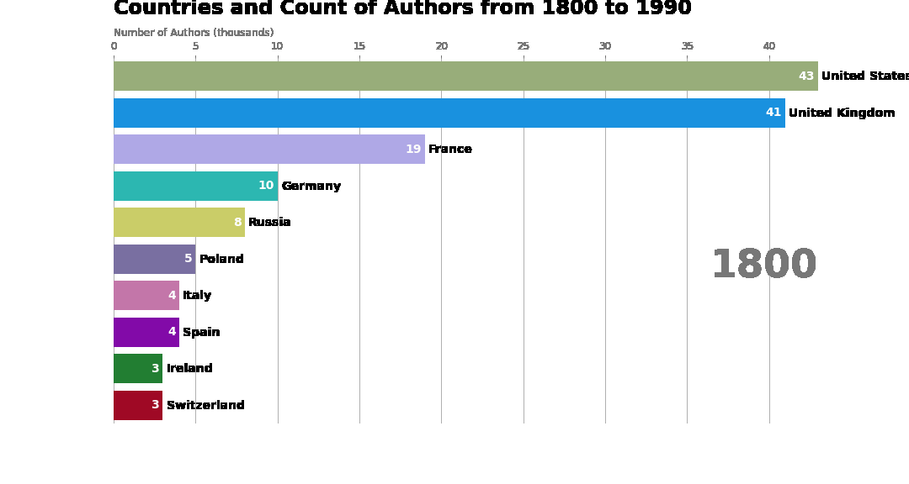
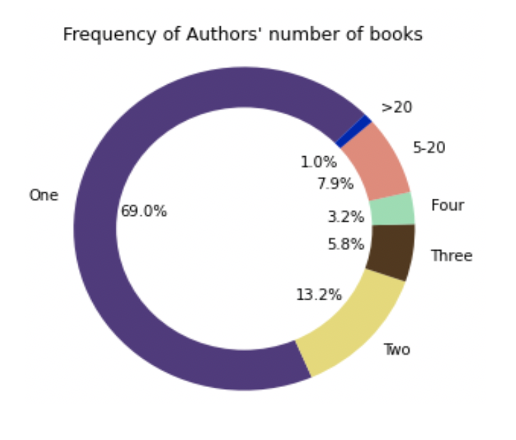
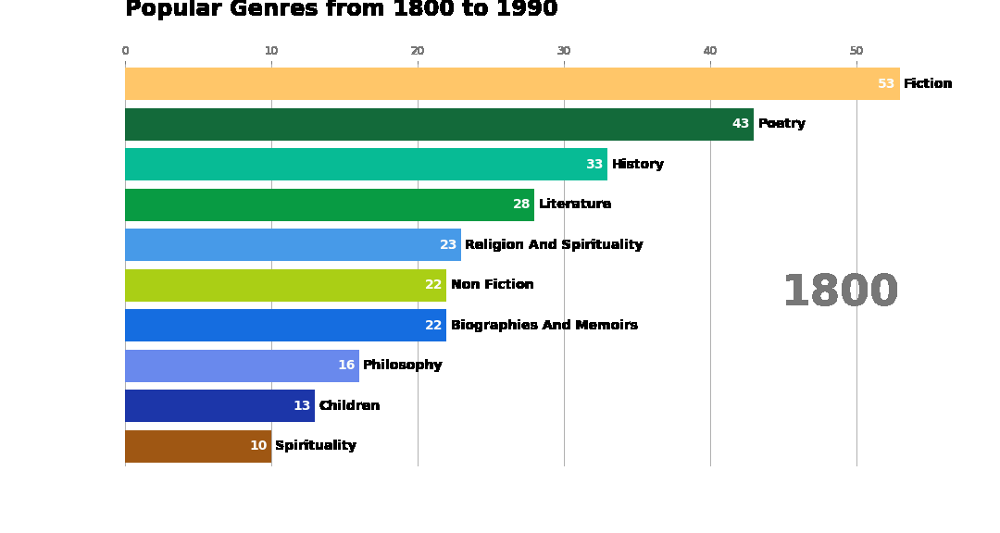
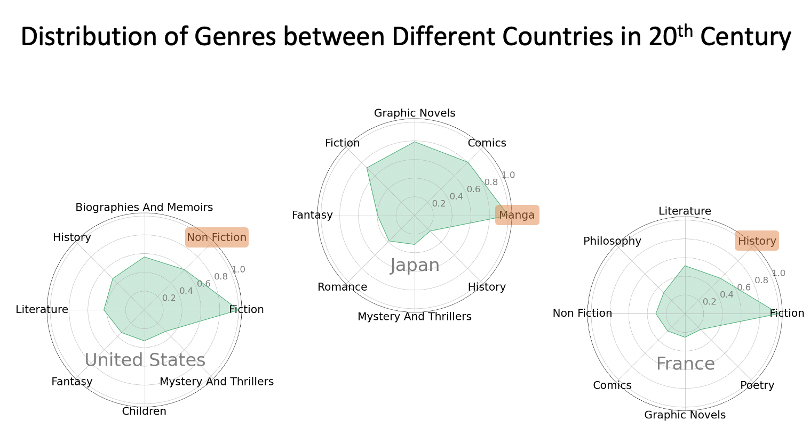
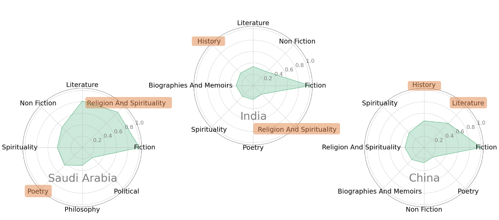
Kaggle Goodreads [
link
] (Dataset)
Kaggle Best of Goodreads [
link
] (Dataset)
Goodreads Authors/books dataset: Kaggle (Dataset)
Authors dataset: GitHub [
link
] (Dataset)
A Kaggle analysis notebook [
link
]
Towards data science: book rating [
link
]
Towards data science: All authors around us [
link
]
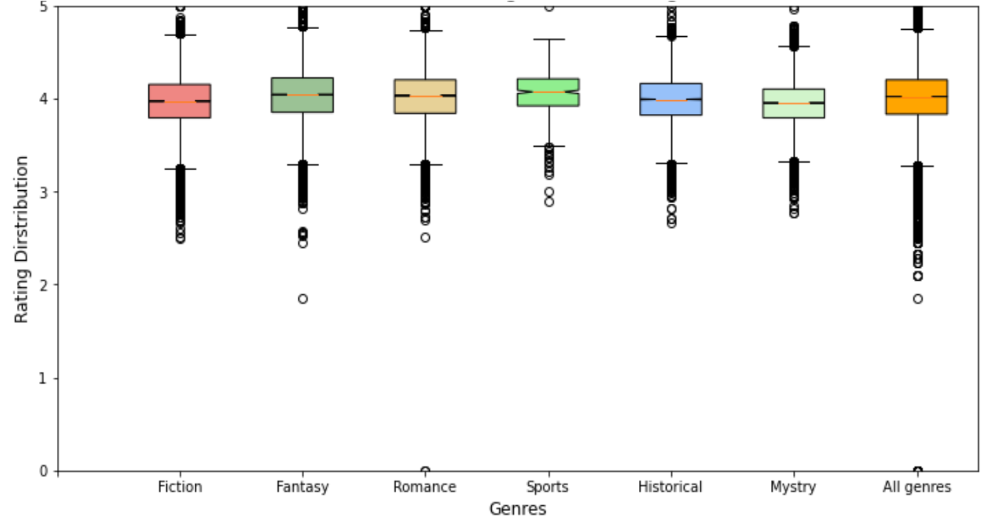 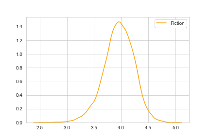
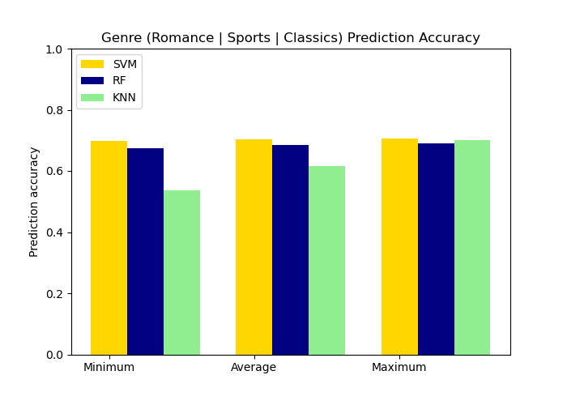
 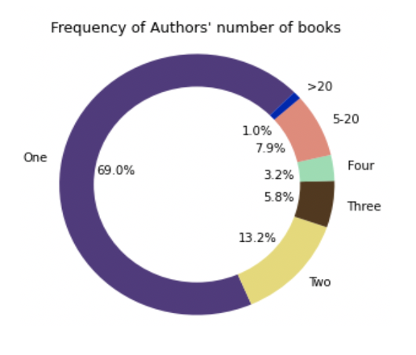
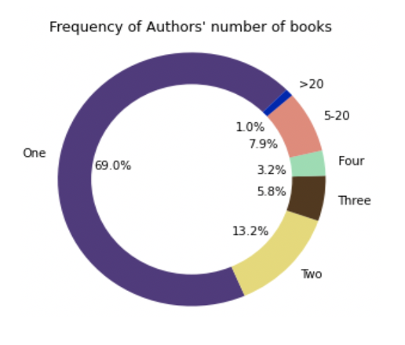
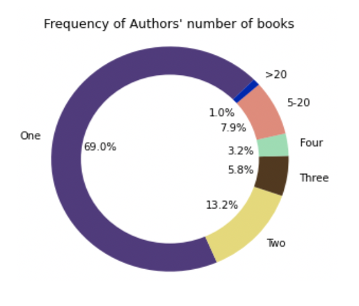
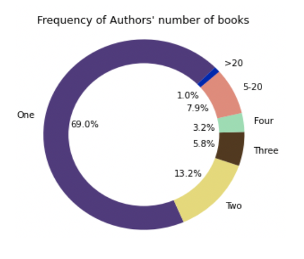